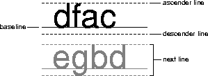

| CONTENTS | PREV | NEXT | Java 2D API |
The Font class has been enhanced to support the specification of detailed font information and enable the use of sophisticated typographic features.A Font object represents an instance of a font face from the collection of font faces available on the system. Examples of common font faces include Helvetica Bold and Courier Bold Italic.
Three names are associated with a Font--its logical name, family name, and font face name:
- A Font object's logical name is a name mapped onto one of the specific fonts available on the platform. The logical font name is the name used to specify a Font in JDK 1.1 and earlier releases. When specifying a Font in JavaTM 2 SDK, you should use the font face name instead of the logical name.You can get the logical name from the Font by calling getName. To get a list of the logical names that are mapped onto the specific fonts available on a platform, call java.awt.Toolkit.getFontList.
- A Font object's family name is the name of the font family that determines the typographic design across several faces, such as Helvetica. You retrieve the family name through the getFamily method.
- A Font objects' font face name refers to an actual font installed on the system. This is the name you should use when specifying a font in Java 2 SDK. It's often referred to as just the font name. You can retrieve the font name by calling getFontName. To determine which font faces are available on the system, you can call GraphicsEnvironment.getAllFonts.
You can access information about a Font through the getAttributes method. A Font's attributes include its name, size, transform, and font features such as weight and posture.A LineMetrics object encapsulates the measurement information associated with a Font, such as its ascent, descent, and leading:
- Ascent is the distance from the baseline to the ascender line. This distance represents the typical height of capital letters, but some characters might extend above the ascender line.
- Descent is the distance from the baseline to the descender line. The lowest point of most characters will fall within the descent, but some characters might extend below the descender line.
- Leading is the recommended distance from the bottom of the descender line to the top of the next line.

This information is used to properly position characters along a line, and to position lines relative to one another. You can access these line metrics through the getAscent, getDescent, and getLeading methods. You can also access information about a Font's height, baseline, and underline and strikethrough characteristics through LineMetrics.